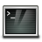

1. Mise en place
-
Ouvrer un terminal, par exemple en cliquant sur  (qui se trouve en bas à gauche)
-
A l’intérieur du terminal taper
cdpuis appuyer sur la touche Entrer.
2. Introduction au Shell
2.1. Présentation du Shell
Humains et ordinateurs interagissent de différentes façons, que ce soit par l’intermédiaire d’une souris et d’un clavier, d’un écran tactile ou par reconnaissance vocale. Pour un ordinateur personnel, la majorité des utilisateurs passent par une interface graphique (en anglais GUI pour graphical user interface). Avec une interface graphique, nous donnons directement des instructions en cliquant sur la souris et en naviguant dans des menus.
Bien que l’aide apportée par l’aspect visuel des GUI rend l’utilisation des ordinateurs plus intuitive, ce mode de fonctionnement peut vite se montrer limité. Pour gagner du temps, réaliser des tâches répétitives ou complexes, nous utiliserons une interface en ligne de commande (en anglais, CLI pour command-line interface).
Le terme anglais «shell» vient à l’origine de la terminologie employée avec les premiers systèmes d’exploitation de type Unix où il avait le sens plus spécifique de shell Unix. Cette appellation est une métaphore (on peut la traduire par coque en français) pour désigner la couche la plus haute des interfaces des systèmes Unix, par opposition à la couche de bas-niveau, appelée noyau.
On appelle souvent terminal l’application qui permet d’utiliser l’interface système.
-
Le shell Unix le plus populaire est Bash (pour Bourne Again Shell, son auteur est Stephen Bourne) , on le retrouve sur la majorité des versions de Linux et sur MacOS. L’application nommée Terminal permet d’y accéder sur MacOS.
-
Les versions récentes de Windows propose un shell nommé Windows PowerShell.
Un autre des avantages d’une interface de commande est de pouvoir donner des instructions à une machine à distance.
2.2. Premiers pas
Revenir vers l’application terminal que vous avez du lancer. Lorsque vous avez ouvert votre terminal, vous avez du voir une invite de commande, indiquant que le terminal est prêt à recevoir vos instructions:
$En général, l’invite de commande d’un terminal est noté $ mais il est
possible d’utiliser d’autres symboles.
Lorsque vous recopiez une commande vous n’avez pas à saisir l’invite $
|
Essayer votre première commande, qui devrait lister le contenu du repertoire dans lequel vous vous trouvez.
$ lsBureau Téléchargements Movies Images
Documents Library Musique Public| Si le shell ne peut trouver le programme correspond à la commande que vous avez tapé, vous devriez avoir un message d’erreur du type: |
$ ksks: command not found2.3. Le problème de Nelle
Nelle Nemo est une biologiste marine, elle revient d’une campagne d’étude de 6 mois dans Gyre subtropical du Pacifique nord où elle a récupéré des échantillons de la faune et de la flore marine. Elle a récupéré des données venant de ces échantillons, qui se trouvent dans 1520 fichiers différents, elle souhaite de plus écrire un article dans une revue scientifique.
Nous allons voir comment une interface de commande permettrait à Nelle de traiter rapidement tout ces différents fichiers.
3. Naviguer dans les répertoires et fichiers
Le système d’exploitation gère nos données en les organisant sous forme de fichiers et de répertoires (on parle aussi de dossiers) à l’aide de son gestionnaire de fichier.
Différentes commandes permettent de créer, inspecter, renommer ou encore supprimer des fichiers et des dossiers.
Commençons par déterminer là où nous nous trouvons en utilisant la commande
nommé pwd (pour print working directory). On peut voir les dossiers comme
des lieux dans lesquels nous pouvons nous trouver. A chaque instant dans
notre terminal, nous nous trouvons dans un lieu, nommé répertoire de travail courant.
Une grande partie des commandes que nous allons voir interagit avec des fichiers et
est sensible à l’endroit où l’on se trouve.
$ pwd/home/nelleIci la réponse de l’ordinateur est /home/nelle, qui correspond au répertoire
personnel de Nelle, pour vous, cela correspond surement à paullapie.
3.1. Le répertoire personnel
Selon le système d’exploitation le chemin correspondant au répertoire maison
varie.
Pour Windows l’équivalent serait C:\Documents and Settings\nelle ou
C:\Users\nelle.
Sur MacOS, /Users/nelle.
Pour mieux comprendre à quoi correspond le répertoire personnel, observons comment sont organisés les fichiers dans notre ordinateur.
Sur l’ordinateur de Nelle, l’organisation des fichiers ressemble à:
3.2. Répertoire racine et ses sous-répertoires
Au sommet se trouve le répertoire racine qui contient tout le reste.
On y fait référence en utilisant le symbole slash / tout seul.
Ce qui correspond aussi au premier slash de /home/nelle.
A l’intérieur de ce répertoire se trouve différents dossiers:
-
binpour les programmes de base du système -
devpour les fichiers représentants les dispositifs matériels (devices). -
etcpour les fichiers de configuration du système -
homepour les répertoires personnels des différents utilisateurs -
…
Remarquons qu’il y a deux sens pour le symbole /, quand il est au début
d’un nom de fichier ou de dossier, c’est le répertoire racine, quand il apparait
à l’intérieur d’un nom, c’est un simple séparateur.
Dans le répertoire /home, nous trouvons différents dossiers, un pour
chacun des utilisateurs possédant un compte sur la machine de Nelle.
C’est à dire ses collègues imhotep et larry.
Nelle étant notre utilisateur dans notre histoire, c’est pour cela que
le répertoire personnel que nous observons est /home/nelle
En général, lorsqu’on lance un terminal, on se trouve dans notre répertoire personnel.
Découvrons maintenant la commande qui va nous permettre de découvrir notre
système de fichier. Il est possible de voir ce qui se trouve dans le dossier
courant en entrant la commande ls (pour listing).
$ lsBureau Téléchargements Movies Images
Documents Library Musique Public(Encore une fois, le résultat dépendra légérement de la configuration de votre système)
ls affiche les noms des fichiers et des dossiers dans le dossier courant.
Il est possible de changer légèrement le résultat de la commande ls
en utilisant l’option -F (on parle aussi de drapeau/flag pour les options).
Cette option classifie par type le résultat de ls, par exemple un /
à la fin d’un nom indique qu’il s’agit d’un dossier, un * indique un
exécutable, etc.
Selon sa configuration le terminal peut utiliser des couleurs pour signifier les différents types de fichiers.
$ ls -FBureau/ Téléchargements/ Movies/ Images/
Documents/ Library/ Musique/ Public/On voit qu’ici notre dossier personnel ne contient que des sous-dossiers.
3.3. Syntaxe générale d’une commande shell
Regardons l’exemple suivant:
$ ls -F /ls est la commande, -F est une option et / est un argument.
Les options commencent par un tiret - ou deux --, et elles changent
le comportement de la commande.
Les arguments précisent sur quels objets la commande s’applique. Ici, la
commande s’applique sur le répertoire racine /.
Une commande peut recevoir plus options et plusieurs arguments. Il faut juste
bien séparer chaque partie par des espaces. Utiliser ls-F ne fonctionnera pas.
De plus les majuscules comptent, ls -r est différent de ls -R.
3.4. L’aide
Il est possible d’obtenir de l’aide sur une commande et ses options avec
la commande man
$ man lsCela transforme votre terminal en une page de description, il est possible de monter ou descendre avec les flèches du clavier dans cette page.
| Pour quitter une page man, appuyez sur la touche q ou Q. |
Exercice:
Que font les options -l et -h de ls ?
Solution
Cliquer pour voir la solution
L’option -l (l pour long) permet d’avoir plus de détails sur les fichiers.
Elle va permettre d’afficher les droits/permissions sur les fichiers (dont nous
parlerons plus tard) ainsi que la taille du fichier, et sa date de dernière modification.
L’option -h (h pour humain) permet d’avoir un affichage plus simple à lire de la
taille des fichiers. Affichant 5.3k à la place de 5369.
Il est possible d’observer le contenu de sous-dossier avec ls, par exemple
essayer:
ls -F BureauVous devriez y voir listé le dossier data-shell. Vous pouvez vérifier
que le résultat est correct en observant directement votre bureau.
Maintenant que nous avons vu que le dossier data-shell se trouve dans notre
Bureau, on peut observer son contenu avec:
ls -F Bureau/data-shellcreatures/ molecules/ notes.txt solar.pdf
data/ north-pacific-gyre/ pizza.cfg writing/Et nous pouvons nous y rendre, en changeant de répertoire courant.
La commande pour changer de répertoire est cd (pour change directory) suivie du nom du répertoire
que nous voulons rejoindre.
Pour nous rendre dans le dossier data, il est possible d’utiliser
la liste de commandes suivantes (et dans cet ordre):
$ cd Bureau
$ cd data-shell
$ cd dataNous nous déplacerons alors de notre répertoire personnel, à notre dossier Bureau, puis
dans le dossier data-shell pour finir dans data.
Remarquons que la commande cd n’affiche rien. Il est cependant
possible d’utiliser la commande pwd pour vérifier que vous êtes dans le bon dossier.
|
Le résultat de la commande ls devrait maintenant être:
$ lsamino-acids.txt elements/ pdb/ salmon.txt
animals.txt morse.txt planets.txt sunspot.txtNous savons maintenant comment descendre dans l’arbre des répertoires, mais comment monter ? Nous pouvons essayer:
$ cd data-shell-bash: cd: data-shell: No such file or directoryMais nous n’obtiendrons qu’une erreur.
En effet, la commande cd ne peut voir que les répertoires se trouvant
dans le répertoire courant. Elle ne peut pas voir les répertoires se situant au
dessus de notre position.
Il y a cependant différentes façon de voir les dossiers se trouvant au dessus de notre position. Nous allons voir la plus simple:
$ cd ..- Important
-
..fait référence au répertoire contenant notre répertoire courant.
Il suffit d’entrer pwd pour vérifier que nous sommes bien remonté d’un dossier.
Le répertoire .. n’apparait pas lorsqu’on utilise la commande ls.
Pour le voir il faut préciser à la commande ls qu’elle doit utiliser
l’option -a.
$ ls -Fa./ .bash_profile data/ north-pacific-gyre/ pizza.cfg thesis/
../ creatures/ molecules/ notes.txt solar.pdf writing/En effet, -a correspond à show all, cela force ls à afficher les
fichiers et dossiers dont le nom commence par ., comme ...
On remarque que cela affiche aussi le répertoire ., qui lui fait référence
au répertoire courant.
En général, les options peuvent être combiné avec un seul -.
ls -F -a est donc équivalent à ls -Fa.
|
Les dossiers . et .. ne servent pas uniquement à la commande cd.
Il est par exemple possible de faire ls ...
3.5. Fichiers cachés
On appelle en général les fichiers commençant par un ., des fichiers cachés.
Vous avez par exemple pu voir .bash_profile, un fichier qui contient
des réglages pour bash.
3.6. Bilan sur la navigation
Nous avons vu que les commandes pwd, ls et cd permettent de naviguer
dans le système de fichier. Explorons maintenant quelques variations sur ces commandes:
Par exemple que ce passe-t-il lorsque l’on entre uniquement cd
$ cdComment faire pour voir où nous nous trouvons désormais ?
$ pwdEn fait cd sans argument nous fait revenir à notre répertoire personnel.
Ce qui peut être pratique lorsqu’on est perdu dans les dossiers.
Retournons maintenant dans le dossier data.
Il est possible de le faire en une seule ligne de commande:
$ cd Bureau/data-shell/data3.7. Chemin relatif et chemin absolu
Jusqu’à présent lorsque nous avons donné des noms de répertoire ou de chemin
(comme Bureau/data-shell/data) nous avons utilisé des chemins relatifs.
Lorsque l’on utilise un chemin relatif avec une commande comme ls ou cd,
la commande cherche l’endroit correspondant depuis le répertoire courant,
plutôt que depuis la racine du système de fichier.
Il est cependant possible de donner l’adresse absolue d’un répertoire, en
donnant le chemin en entier depuis le répertoire racine. Ce qui est indiqué
par un / au début du chemin.
Cela nous permet de nous rendre dans notre dossier data-shell depuis
n’importe quel endroit.
Pour obtenir le chemin absolu ver le dossier data-shell, nous allons utiliser
pwd. Pour Nelle cela donne:
$ pwd/home/nelle/Bureau/data-shell/dataCopier-coller la partie appropriée et utilisez cd pour vous rendre dans le dossier data-shell.
Pour Nelle cela donne:
$ cd /home/nelle/Bureau/data-shell/3.8. Quelques raccourcis
L’interprète de commande comprend le symbole ~ (tilde) au début d’un chemin
comme l’adresse du répertoire personnel de l’utilisateur.
cd /home/nelle/Bureau/data-shell/ est donc équivalent à cd ~/Bureau/data-shell/.
Cela ne fonctionne que si ~ est le premier caractère du chemin.
here/there/~/elsewhere ne veut pas dire here/there/home/nelle/elsewhere.
Un autre raccourci est - qui veut dire le répertoire précédent.
Exercice: Distingué chemin absolu et relatif
En partant de /home/amanda/data, quelles commandes Amanda pourrait utiliser
pour rejoindre son répertoire personnel ?
-
cd . -
cd / -
cd /Users/amanda -
cd ../.. -
cd ~ -
cd home -
cd ~/data/.. -
cd -
cd ..
Solution
Cliquer pour voir la solution
-
Non,
.veut dire le répertoire courrant. -
Non,
/veut dire le répertoire racine. -
Non, le dossier personnel d’Amanda est
/home/amanda. -
Non, cela remonte de deux niveaux, on termine dans
/home. -
Oui,
~correspond au répertoire personnel de l’utilisateur. -
Non, cela nous ferait aller dans le sous-répertoire
homedu dossier courant s’il existe. -
Oui, c’est compliqué mais correct.
-
Oui, c’est un raccourci déjà vu.
-
Oui, il suffit de remonter d’un niveau.
Exercice: résolution de chemin relatif
En se basant sur le diagramme ci-dessous, si pwd affiche
/home/thing, qu’affiche ls -F ../backup ?
-
../backup: No such file or directory -
2018-12-01 2019-01-08 2019-01-27 -
2018-12-01/ 2019-01-08/ 2019-01-27/ -
original/ pnas_final/ pnas_sub/
Solution
Cliquer pour voir la solution
-
Non: il y a un dossier
backupdans/home. -
Non: c’est le contenu de
home/thing/backup, mais avec..nous avons demandé un niveau au dessus. -
Non: comme pour la question précédente.
-
Oui:
../backup/correspond à/home/backup/.
Exercice: comprendre ls
En se basant sur le diagramme ci-dessous, si pwd affiche
/home/backup, et -r dit à ls d’afficher les résultats
en ordre inversé, quelle commande affichera le résultat suivant:
$ pnas_sub/ pnas_final/ original/-
ls pwd -
ls -r -F -
ls -r -F /home/backup
Solution
Cliquer pour voir la solution
-
Non:
pwdn’est pas le nom du dossier. -
Oui:
lssans argument donne la liste des fichiers et dossiers du répertoire courant. -
Oui: utilise le chemin absolu correct.
3.9. L’organisation de Nelle
Nelle a crée un dossier north-pacific-gyre et à l’intérieur un dossier nommé
2012-07-03 qui correspond à la date où elle a numérisé l’échantillon.
Chaque échantillon à un nom du type 'NENE01729A'.
Nelle peut maintenant voir chacun des fichiers correspondant à un échantillon en tapant:
$ ls north-pacific-gyre/2012-07-03/Cela peut sembler énorme à taper, mais la complétion va nous permettre d’éviter de trop taper.
Pour cela Nelle tape:
$ ls norPuis appuie sur la touche Tab ⇆ et le terminal compléte north-pacific-gyre/ pour elle.
Si elle appuie à nouveau sur Tab ⇆, le terminal va ajouter 2012-07-03/ pour elle.
Appuyer à nouveau sur Tab ⇆ encore ne fait plus rien car il y a 19 possibilités. Il faut donc appuyer deux fois sur Tab ⇆ pour lister toutes les possibilités.
3.10. Bilan:
-
Le gestionnaire de fichier est responsable de la gestion des fichiers sur le disque.
-
L’information est stocké dans des fichiers stockés dans des dossiers/répertoires.
-
Les répertoires peuvent stocker d’autres répertoires. Ce qui crée un arbre de fichier.
-
cd cheminchange le répertoire courant. -
ls cheminaffiche la liste des fichiers et dossiers.lsseul fait référence au dossier courant. -
pwdaffiche le répertoire courant. -
/seul est le répertoire racine du système de fichier. -
Un chemin relatif spécifie un dossier/fichier depuis le répertoire courant.
-
Un chemin absolue spécifie un dossier/fichier depuis le répertoire racine.
-
Sous Unix, les noms dans un chemin sont séparés par des
/, sous Windows par\. -
..signifie le répertoire au dessus du répertoire courant. -
.seul signifie le répertoire courant.
4. Créer/copier/déplacer des fichiers
Nous savons maintenant nous déplacer dans les dossiers. Mais comment les créer ?
Revenir dans le dossier data-shell se trouvant dans le bureau.
$ lsDoit afficher:
creatures/ data/ molecules/ north-pacific-gyre/ notes.txt pizza.cfg solar.pdf writing/4.1. Créer un nouveau dossier
Créeons un dossier article en utilisant la commande mkdir article (qui n’affiche rien si tout s’est bien passé):
$ mkdir articlePour vérifier que le dossier est bien créé:
$ ls -Farticle/ creatures/ data/ molecules/ north-pacific-gyre/ notes.txt pizza.cfg solar.pdf writing/Vous pouvez aussi vérifier avec le navigateur de fichier (en GUI), que le dossier a bien été créé.
|
Quelques conseils pour bien nommer ses dossiers et fichiers
. Ne pas utiliser d’espace, utiliser des tirets |
4.2. Créer un fichier texte
Passer dans le répertoire article, en utilisant cd. Puis
créons un fichier draft.txt en utilisant l’éditeur de texte Nano
$ cd article
$ nano draft.txt4.2.1. Editeur de texte ?
Nano est un éditeur de texte qui se contente d’éditer du texte, il ne fait rien de complexe et ne formate pas l’apparence comme LibreOffice ou Microsoft Words.
Vous pouvez essayer un autre éditeur de texte comme Geany.
Taper quelques mots, puis appuyer sur Ctrl+O pour sauver le contenu. Appuyez sur entrer pour valider le nom.
Pour quitter: Ctrl+X.
Vérifier que le fichier est bien créé:
$ lsVous pouvez utiliser la commande cat pour afficher le contenu du dossier:
$ cat draft.txt(cat pour concatenate car cat permet de mettre bout à bout le contenu de plusieurs fichiers)
4.3. La commande touch
Essayer la commande
$ touch my_file.txtExercice: la commande touch
-
Qu’a fait exactement la commande
touch. Voyez vous le fichier dans l’explorateur de fichier en GUI. -
Utiliser
ls -lpour inspecter le fichier, quel est la taille demy_file.txt?
Solution
Cliquer pour voir la solution
-
La commande touch a généré un fichier nommé
my_file.txtdans le répertoire courant. On peut le voir dans l’explorateur de fichier. -
Le fichier ne contient rien, il est à 0 octet.
4.4. Extensions
Vous avez remarqué que certains fichiers finissent en .machin, nous
avons nous même utilisé .txt, c’est uniquement une convension nommé
le fichier draft ou draft.txt ne change rien.
Cependant préciser une telle extension, permet de mieux identifier le contenu du fichier que ce soit aussi bien pour l’humaine que pour le système.
Les fichiers ne contiennent qu’une suite de bits, préciser une extension ni change rien mais permet de savoir comment interpréter cette suite bits: comme du texte, comme un PDF ou comme une image, etc.
Changer le nom d’un fichier de .pdf à .mp3 ne le transforme pas
de façon magique en une chanson. Cela fera juste croire au système
qu’il faut l’ouvrir avec un lecteur de musique.
4.5. Déplacer fichier et répertoires
Retournez dans le dossier data-shell.
Dans le dossier article, nous avons un fichier draft.txt dont nous
voudrions changer le nom.
Pour cela, nous utiliserons la commande mv (pour move):
$ mv article/draft.txt article/citations.txtLe première argument dit à mv ce que nous déplaçons.
Le deuxième précise où nous le déplaçons.
Nous déplaçons donc article/draft.txt vers article/citations.txt ce qui
a le même effet que renommer le fichier.
Vérifier avec ls article que le contenu correspond.
Il faut faire attention en précisant le nouveau nom du fichier, car mv écrase
sans prévenir les fichiers déjà existant portant le même nom.
On peut pour éviter cela préciser l’option interactive: mv -i pour demander
confirmation si le fichier existe déjà.
mv permet aussi de déplacer des dossiers.
|
Déplaçons citations.txt dans le dossier courant, cette fois-ci nous
ne préciserons que le nom du dossier recepteur dans le deuxième argument, pour
dire à mv que nous ne souhaitons pas changer le nom du fichier.
Comme nous voulons déplacer le fichier dans le répertoire courant, nous allons
utiliser ..
$ mv article/citations.txt .Vérifier avec ls que article est vide, puis que fichier a été déplacé au
bon endroit.
Exercice: déplacé vers le répertoire courant
Après avoir tapé les commandes ci-dessous Jamie se rend compte qu’elle
a placé les fichiers sucrose.dat and maltose.dat dans le mauvais répertoire.
$ ls -F
analyzed/ raw/
$ ls -F analyzed
fructose.dat glucose.dat maltose.dat sucrose.dat
$ cd raw/Compléter les blancs pour que ces fichiers soient déplacé dans le répertoire courant.
$ mv ___/sucrose.dat ___/maltose.dat ___Solution
Cliquer pour voir la solution
$ mv ../analyzed/sucrose.dat ../analyzed/maltose.dat .Souvenez vous que .. fait référence au dossier parent et . au dossier courant.
Il est possible déplacer plusieurs fichiers avec un seul mv.
4.6. Copier des fichiers et des dossiers
La commande cp (pour copy) fonctionne comme la commande mv à l’exception
qu’elle copie les fichiers au lieu de les déplacer.
$ cp citations.txt article/
$ ls
$ ls article/Il est possible de copier un dossier et tout son contenu en utilisant
l’option -r (pour recursive, qui signifie pour faire simple répéter un même schéma)
$ cp -r article article_backup$ ls article article_backupExercice: renommé des fichiers
Supposons que l’on aillons créé un fichier nommé statstiques.txt.
Quelles sont les ou la bonnes commandes pour renommer le fichier en statistiques.txt ?
-
cp statstiques.txt statistiques.txt -
mv statstiques.txt statistiques.txt -
mv statstiques.txt . -
cp statstiques.txt .
Solution
Cliquer pour voir la solution
-
Non, cela va créer un nouveau fichier avec le bon nom, mais ne supprime pas l’ancien.
-
Oui
-
Non, cela n’indique pas le nouveau nom
-
Non
Exercice: Copier et déplacer
Qu’affiche le dernier ls dans cette suite de liste de commande:
$ pwd
/home/jamie/data
$ ls
proteins.dat
$ mkdir recombine
$ mv proteins.dat recombine/
$ cp recombine/proteins.dat ../proteins-saved.dat
$ ls-
proteins-saved.dat recombine -
recombine -
proteins.dat recombine -
proteins-saved.dat
Solution
Cliquer pour voir la solution
Nous commençons dans /Users/jamie/data puis nous créons recombine.
Nous déplaçons proteins.dat dans le dossier recombine. Puis
nous copions le fichier proteins.dat dans le dossier du répertoire au
dessus du dossier courant, c’est à dire /home/jamie/.
-
Non
-
Oui
-
Non
-
Non
4.7. Supprimer des fichiers et des dossiers
Retourner dans le dossier: data-shell.
On souhaite supprimer le fichier citations.txt que nous avons créé.
La commande pour cela est rm (pour remove).
$ rm citations.txtConfirmer avec ls.
rm supprime pour toujoursLe shell Unix ne propose pas de poubelle (même si elle existe pour l’interface graphique).
Il vaut mieux se dire que |
4.8. Supprimer avec prudence
Que se passe-t-il si on utilise l’option -i pour supprimer le fichier
article_backup/citations.txt ?
Si nous essayons maintenant de supprimer le dossier article en utilisant rm
Nous obtenons le message d’erreur.
rm: cannot remove `thesis': Is a directoryComme on peut le comprendre à la lecture du message d’erreur par défaut, rm
ne permet pas de supprimer les dossiers uniquement les fichiers.
Pour supprimer un dossier et son contenu, il faut préciser l’option -r.
$ rm -r article4.9. Opérer sur plusieurs fichiers et dossiers
On a souvent besoin de déplacer ou copier plusieurs fichiers d’un coup. Cela est possible en précisant plusieurs noms, ou en utilisant une wildcard.
Pour cet exercice placer vous dans le dossier data-shell/data:
Que font les commandes suivantes ?
$ mkdir backup
$ cp amino-acids.txt animals.txt backup/4.9.1. Wildcard
* est une wildcard, elle correspond à 0 ou plusieurs caractères quelconques.
Considérons le dossier data-shell/molecules.
-
*.pdbva correspondre aux fichiersethane.pdb,propane.pdbet tout les fichiers se terminant en.pdb. -
p*.pdbne va correspondre qu’aux fichierspentane.pdbetpropane.pdbcar il y a un p au début.
? est aussi une wildcard, mais qui ne correspond qu’à un seul caractère.
-
?ethane.pdbva correspondre àmethane.pdbalors que*ethane.pdbva correspondre àmethane.pdbetethane.pdb
Il est possible d’utiliser plusieurs Wildcards.
???ane.pdb correspond à 3 caractères suivies de ane.pdb.
Ce qui donne cubane.pdb ethane.pdb octane.pdb.
Exercices: lister les fichiers correspondants à un motif
Dans le dossier molecules, quelle(s) commande(s) ls donneront le résultat:
`ethane.pdb methane.pdb`-
ls *t*ane.pdb -
ls t?ne. -
ls *t??ne.pdb -
ls ethane.*
Solution
Cliquer pour voir la solution
La solution est 3.
Exercices: organisation
Jamie a mal organisé ses fichiers:
$ ls -F
analyzed/ fructose.dat raw/ sucrose.datQue faire pour obtenir les résultats suivants ?
$ ls -F
analyzed/ raw/
$ ls analyzed
fructose.dat sucrose.datSolution
Cliquer pour voir la solution
mv *.dat analyzedExercice: Reproduire une structure
Vous commencez une nouvelle expérience, et vous voudriez reproduire la structure de dossier d’une expérience précédente:
L’expérience précédente se trouve dans le dossier '2016-05-18' qui contient
un dossier data, qui contient un dossier raw et un dossier processed qui contiennent
des fichiers.
On souhaite recopier la structure du dossier dans 2016-05-20 pour que cela donne:
2016-05-20/
└── data
├── processed
└── rawQuelle serait la bonne suite de commande ?
$ mkdir 2016-05-20
$ mkdir 2016-05-20/data
$ mkdir 2016-05-20/data/processed
$ mkdir 2016-05-20/data/raw$ mkdir 2016-05-20
$ cd 2016-05-20
$ mkdir data
$ cd data
$ mkdir raw processed$ mkdir 2016-05-20/data/raw
$ mkdir 2016-05-20/data/processed$ mkdir 2016-05-20
$ cd 2016-05-20
$ mkdir data
$ mkdir raw processedSolution
Cliquer pour voir la solution
Les deux premiers jeux de commandes sont corrects.
Le troisième non, car mkdir ne permet pas de créer une suite de sous-répertoire.
Le quatrième non plus.
4.10. Bilan:
-
cp old newcopie un fichier. -
mkdir chemincrée un nouveau dossier. -
mv old newdéplace (et peut renommer) un fichier ou un répertoire. -
rm cheminsupprime un fichier. -
*correspond à 0 ou plusieurs caractères quelconques,*.txtcorrespond à tout les .txt. -
?correspond à un caractère quelconque,?.txtcorrespond àa.txtmais pas àany.txt. -
Le shell ne propose pas de poubelle.
-
La majorité des fichiers ont une extension, mais elle n’est pas indispensable et ne garantie rien sur la nature du fichier, c’est une indication.
-
Il existe différent éditeur de texte comme Nano ou Geany.
-
La commande
catpermet de voir le contenu d’un fichier.
5. Fin du T.P
Vous pouvez vous rendre sur: http://luffah.xyz/bidules/Terminus/ pour vous entrainer.
6. Licence et source
Ce T.P est inspiré de http://software-carpentry.org/ qui est proposé sous la licence: https://creativecommons.org/licenses/by/4.0/legalcode